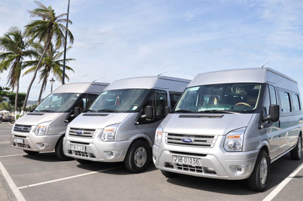
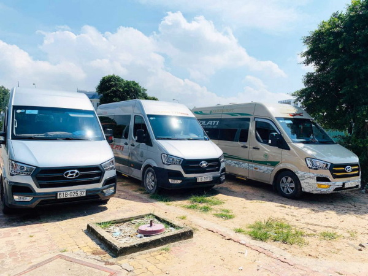
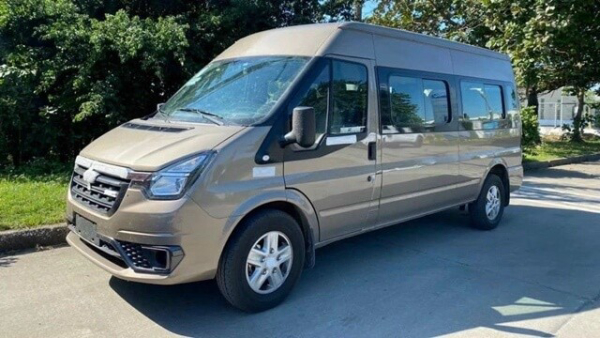
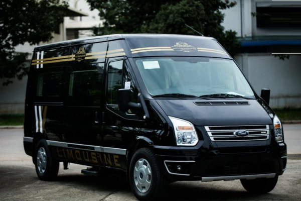
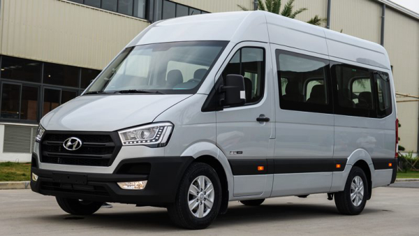

Khi đi tham quan Phú Quốc cùng đoàn khách đông người, điều đầu tiên mà một trưởng đoàn cần quan tâm là thuê xe 16 chỗ Phú Quốc để tiện cho việc di chuyển của cả đoàn. Bài viết này của Thuê Xe Du Lịch Phú Quốc sẽ cung cấp cho bạn một số thông tin về dịch vụ thuê xe 16 chỗ cũng như địa chỉ thuê xe đảm bảo chất lượng nhất nhé.
Kinh nghiệm thuê xe 16 chỗ Phú Quốc
Phú Quốc là một hòn đảo khá lớn sở hữu nhiều danh lam thắng cảnh và bãi biển đẹp nằm rải rác từ Bắc đến Nam đảo nên việc thuê một chiếc xe du lịch là vô cùng cần thiết để đảm bảo du khách có thể tham quan hết các địa danh nổi tiếng và tận hưởng trọn vẹn chuyến đi.
Xác định số lượng người tham gia
Xác định số lượng người trong đoàn sẽ tham gia chuyến du lịch để chọn loại xe thuê phù hợp. Chẳng hạn nếu là gia đình có 3 người thì nên thuê xe 4 chỗ, gia đình hay nhóm bạn từ 5 - 6 người thì thuê xe 7 chỗ, nếu như là cả một đoàn khách cùng đi thì nên thuê xe 16 chỗ trở lên.
Khi chọn cỡ xe, bạn cũng nên chọn trừ hao vài chỗ so với số người dự kiến sẽ tham gia để dự trù khi phát sinh thêm người tham gia muộn và để có thêm chỗ trống làm nơi ngả lưng cho những người bị say xe và trẻ nhỏ. Ngoài ra, chỗ ngồi dư cũng có thể tận dụng để chứa hành lý và quà mua về cho người thân, gia đình.
Chọn thuê xe có lái hay tự lái
Giữa hình thức thuê xe tự lái hay kèm tài xế thì chắc chắn phương án thuê xe tự lái sẽ giúp bạn tiết kiệm khá nhiều ngân sách. Tuy nhiên khi thuê xe 16 chỗ tham quan với nhóm đông người thì bạn nên thuê thêm tài xế để đảm bảo an toàn đồng thời tránh việc mệt mỏi do lái xe để bạn có thể tận hưởng chuyến đi trọn vẹn.
Trong trường hợp thuê xe có lái, bạn nên trao đổi số điện thoại với tài xế để dễ dàng liên lạc. Và nếu có thể, bạn hãy thống nhất với bác tài trước chuyến đi về lịch trình, tuyến đường và yêu cầu tốc độ để bạn và đoàn của mình có kỳ nghỉ hoàn hảo nhất.
Tham khảo giá thuê xe
Giá thuê xe du lịch 16 chỗ phụ thuộc vào đời xe, số km trên ngày, thời gian bao lâu, thuê xe tự lái hay có lái,… Đặc biệt giá thuê xe sẽ cao hơn vào dịp lễ tết hay kỳ những kỳ nghỉ dài ngày.
Đôi khi giữa các nơi cho thuê xe sẽ có mức giá chênh lệch vì việc so sánh, đối chiếu giá xe giữa các địa điểm cho thuê sẽ giúp bạn dễ dàng tìm được mức giá hợp lý nhất.
Địa điểm thuê xe du lịch 16 chỗ Phú Quốc tốt nhất, tiết kiệm nhất
Thuê Xe Du Lịch Phú Quốc đáp ứng tất cả những yêu cầu về số lượng, chất lượng xe để phục vụ quý khách.
Chúng tôi cam kết mang đến dịch vụ tốt nhất, đảm bảo quyền lợi của khách hàng là trên hết, đồng thời mang lại mức giá tốt nhất trên thị trường.
Mọi chiếc xe tại Thuê Xe Du Lịch Phú Quốc luôn được vệ sinh sạch sẽ và bảo dưỡng định kỳ, giao xe đúng như trong hợp đồng, không phụ thu, thanh toán tiện lợi, linh hoạt. Bạn chỉ cần gọi điện hoặc gửi mail cho chúng tôi là có thể xác nhận đặt xe, không cần đặt cọc hay thanh toán trước.

Xe du lịch 16 chỗ
Đội ngũ nhân viên của Thuê Xe Du Lịch Phú Quốc được đào tạo chuyên nghiệp sẽ hỗ trợ giải đáp mọi thắc mắc 24/7, mang đến sự hài lòng tốt nhất cho khách hàng khi sử dụng dịch vụ của chúng tôi.
Giá thuê xe 16 chỗ tham khảo tại Thuê Xe Du Lịch Phú Quốc
-
Sân bay - Vinpearl 700.000 đ/chiều
-
Sân bay - Dương Đông 300.000 đ/chiều
-
Sân bay - Bãi Khem An Thới 500.000 đ/chiều
-
Tour nam đảo 800.000 đ
-
Tour đông đảo 500.000 đ
-
Tour bắc đảo 1.000.000 đ
-
(Tuor áp dụng đón ở khu vực dương đông và trong thời gian 4 tiếng)

Dịch vụ chất lượng tại Thuê Xe Du Lịch Phú Quốc
Những dòng xe 16 chỗ được thuê nhiều nhất tại Thuê Xe Du Lịch Phú Quốc
Ford Transit
Đây là dòng xe thông dụng nhất trong phân khúc thuê xe 16 chỗ nhờ có giá thuê rẻ, không gian rộng rãi, chỗ ngồi thoải mái. Xe vận hành êm ái nhờ có nhiều sự cải tiến, hệ thống máy lạnh hiện đại có cửa gió đến từng hàng ghế để quý khách cảm thấy dễ chịu nhất.

Xe Ford Transit
Limousine
Limousine là loại xe cao cấp có nội thất và khoang tách biệt giữa ghế ngồi và ghế
lái. Đặc biệt loại xe này được trang bị những tiện ích như hàng ghế bọc da êm ái,
ghế có thể ngả trượt để thư giãn, đèn đọc sách, thiết bị âm thanh, cổng sạc và nhiều
hiệu ứng đèn trần.
Vì vậy loại xe này rất thích hợp với những khách hàng cần thuê để đi gặp gỡ đối, đi
công tác xa hay đi du lịch.

Xe Limousine
Hyundai Solati
Hyundai Solati là dòng xe cao cấp trong phân khúc xe 16 hiện nay. Xe Solati bên cạnh việc có thiết kế đẳng cấp, sang trọng, đầy đủ tiện nghi còn được trang bị động cơ mạnh mẽ cùng nhiều công nghệ hiện đại vận hành tốt trong các điều kiện khí hậu và địa hình khác nhau.

Xe Hyundai Solati
Trên đây là một vài chia sẻ của chúng tôi về dịch vụ thuê xe 16 chỗ Phú Quốc. Hy vọng những thông tin trên sẽ giúp ích cho bạn trong chuyến du lịch cùng người thân, bạn bè tại Phú Quốc. Nếu bạn muốn tìm một địa chỉ thuê xe du lịch chất lượng hãy liên hệ ngay với Thuê Xe Du Lịch Phú Quốc để được cung cấp dịch vụ tốt nhất nhé.
Thông tin liên hệ:
- Hotline: 0914 299 909 - 0984 299 909
-
- Địa chỉ: Đường Nguyễn Văn Cừ, Ấp Suối Mây, Xã Dương Tơ, TP Phú Quốc, Tỉnh Kiên Giang
-
- Website: Thuexedulichphuquoc.com